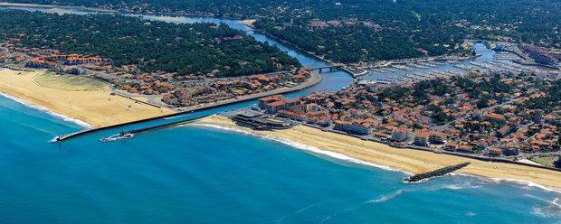

Adolescence
A l'aube de mon adolescence (1999), je déménage avec ma mère et mes 5 frères et soeurs à Saint-Sever, ville voisine de Mont de marsan. Petite ville connue pour ses traditions de tauromachie et culinaire, elle peut se targer d'être la capitale des vollailles fermières et de tous ses produits dérivés, Le poulet jaune des Landes a fait l'attribution du 1er Label Rouge en France. C'est un peu grâce à cela que je me dirige vers des études de cuisine, partant faire mon BEP et mon BAC PRO cuisine au Lycée Hôtelier Louis Darmante de Capbreton.
